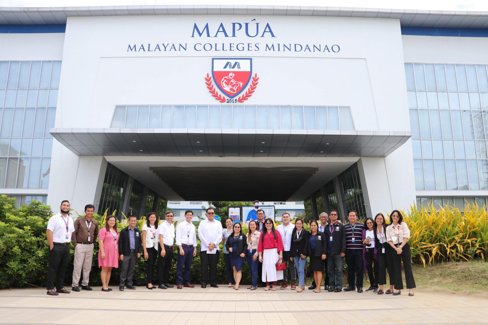
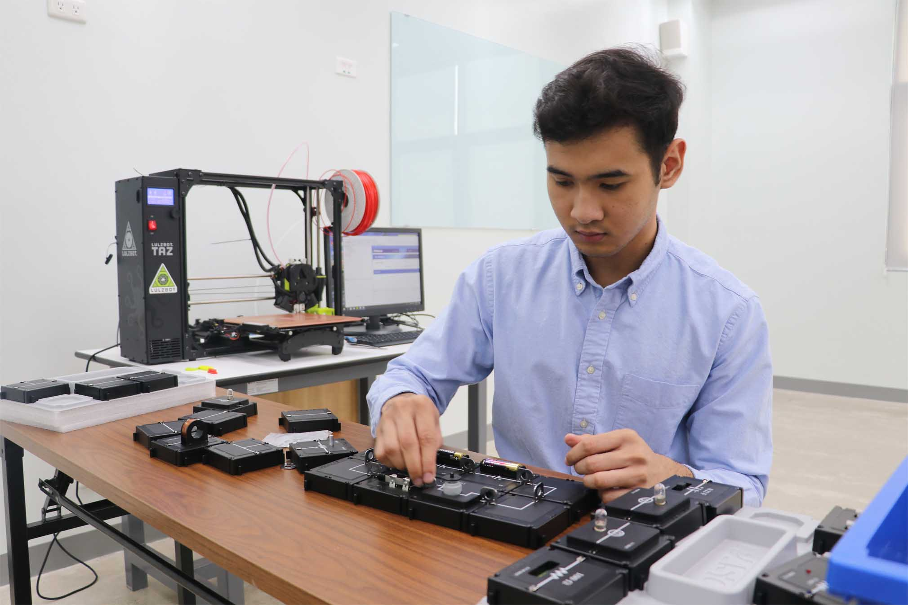

Mapúa Malayan Colleges Mindanao.
Excellence and Relevance

Vision
Mapúa Malayan Colleges Mindanao shall be a school of global standards and of great significance locally and beyond
Mission
The institute shall provide a learning environment in order for its students to acquire the attributes that will make them globally competitive & locally in-demand.
The institute shall engage in cutting edge and economically viable research, development and innovation that is relevant locally and beyond.
The institute shall provide state-of-the-art solutions to problems of industries and communities locally and beyond.
Mission
The institute shall provide a learning environment in order for its students to acquire the attributes that will make them globally competitive & locally in-demand.
The institute shall engage in cutting edge and economically viable research, development and innovation that is relevant locally and beyond.
The institute shall provide state-of-the-art solutions to problems of industries and communities locally and beyond.
College of Engineering and Architecture
 College of Engineering and Architecture (CEA) transforms its graduates to become globally competitive, innovative leaders, socially responsible and result-oriented engineers and architects. MapúaMCM-CEA commits to educate students imbued with good moral and ethical values while engaging economically viable research and innovation that is relevant locally and beyond.
At CEA, students are primed and supervised by their adept mentors equipping students with profound knowledge and excellent skill-set through outcomes-based curricula in order for the students to have access to personalized learning allowing them to perform their best and achieve their academic and personal goals meeting local and global standards.
This kind of learning environment will upskill students to find state of the art solutions to the most challenging technological and socio-technological issues of different industries.
About Me
Info
Age: 21
Birthday: July 30, 2002
Zodiac Sign: Leo
Height:182 cm
Weight: 90 kg
Motto in life:
"Be Distressed or Be Empowered"
Tag: Weeb
Present
Currently I am a third year BS CPE Student in Mapua Malayan Colleges Mindanao.
Childhood
I am born in Cotabato City and have No permanent Address. I lived in Cotabato and Siquijor before settling in Lebak
Elementary
I am very keen to studying. I'm like the typical minecraft kid spokening dollar. I am very fat during this time and mostly get all of the awards. Luckily, I am able to transistion to a versatile person during my highschool days.
Highschool
I am a minmax major. I do minimum effort in everything but luckily get the highest grades. I am addicted to all trendy computer games and engaged in a lot sports
Favorite Foods
Adobo

Chicken Curry

Spaghetti